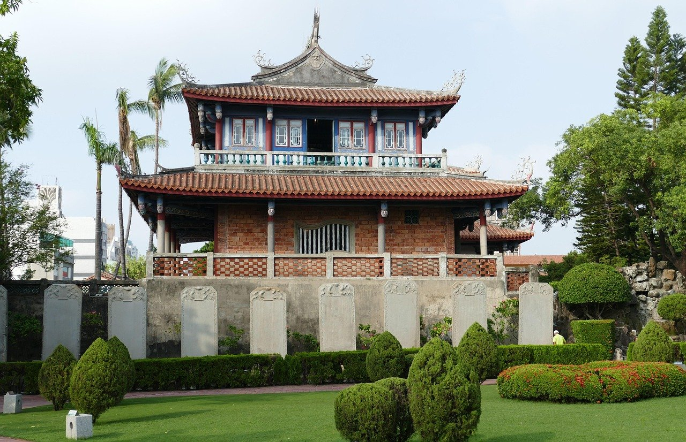

타이베이 타이난 3박4일, 이동 줄이려면 며칠씩 나눌까?
당일치기로 다녀올지, 하룻밤 묵을지, 아예 가오슝 공항으로 나갈지 — 이동 시간을 줄이는 배분안을 표로 비교했습니다.
게시
"타이베이 타이난 3박4일인데 숙소를 옮기는 게 나을까요?" 두 도시를 한 번에 묶으려는 여행자에게 가장 큰 변수는 이동 시간이에요. 고속철 공식 운임과 실제 여행자들의 경험을 바탕으로 이동을 줄이는 일정 배분안을 정리해봤어요.
01 · 일정 배분안 한눈에 비교하기
| A. 타이베이 3박 + 타이난 당일 | B. 타이베이 2박 + 타이난 1박 | C. 타이베이 in · 가오슝 out | |
|---|---|---|---|
| 숙소 이동 | 없음 | 1회 | 1회 |
| 타이난 체류 | 약 6~8시간 | 저녁·아침까지 여유 | 1박 + 마지막 날 오전 |
| 장점 | 짐 이동 없음 | 야경·아침 식사까지 경험 | 되돌아오는 이동이 없음 |
| 단점 | 왕복 이동으로 피로 | 체크인·아웃 시간 소요 | 항공권 선택지가 좁을 수 있음 |
| 추천 상황 | 타이난은 맛보기만 | 타이난 비중이 큰 여행 | 가오슝 출국편이 맞을 때 |
02 · 타이베이 타이난 3박4일, 고속철 이동 시간
고속철 타이베이역에서 타이난역까지 표준석 지정석 성인 편도가 NT$1,350, 자유석이 NT$1,305입니다(2026년 9월 기준). 정차역 수에 따라 약 1시간 20분에서 2시간 정도 걸려요. 다만 고속철 타이난역은 시내와 떨어져 있어, 사룬선 기차나 버스·택시로 20~30분을 더 잡아야 합니다.
조기 예매 할인 확인 고속철 공식 앱에서 조기 예매 할인이 열리는 경우가 있어요. 일정이 정해지면 바로 확인하세요.
짐은 보관하고 가볍게 당일치기라면 타이베이 숙소에 짐을 두고, 1박이라면 작은 가방만 들고 가는 여행자가 많아요.
타이난역 기준으로 움직이기 시내 명소는 타이난역·중시구 일대에 몰려 있어 이곳을 기점으로 동선을 짜면 편합니다.

03 · 배분안별 추천 흐름
당일치기 오전 고속철로 이동 → 츠칸러우·공자묘 일대 → 선눙제 산책 → 저녁 고속철로 복귀. 식사는 두 끼만 타이난에서 해결하는 흐름이에요.
1박 둘째 날 오후 이동 → 안핑 노을 → 다음 날 아침 식사 후 구시가 → 오후 타이베이 복귀. 타이난 아침 메뉴를 경험하려는 여행자에게 인기예요.
가오슝 출국 마지막 날 타이난에서 가오슝 공항까지 이동 시간을 넉넉히 잡으면 됩니다. 항공편 시간부터 확인하세요.
04 · 이럴 땐 타이난을 다음으로 미루세요
첫 대만 여행이고 타이베이 근교(지우펀·예류)까지 보고 싶다면 3박4일에 두 도시는 빠듯합니다. 이동만 왕복 5시간 안팎을 쓰게 되니, 타이난은 다음 여행에서 2박 이상으로 잡는 편이 만족도가 높다는 의견도 많아요.
"타이난은 먹으러 가는 도시라 최소 두 끼 이상은 거기서 먹어야 아깝지 않다." — 타이난을 다녀온 여행자들이 자주 하는 말을 요약했습니다.
타이난에서 보내는 하루는 먹는 일정이 절반이에요. 타이난 맛집 지도로 숙소 주변부터 보고, 타이난 대만식 맛집 중 단짜이몐으로 알려진 두샤오웨 단짜이몐 타이난 본점을 동선에 넣어보세요. 타이베이 쪽은 타이베이 맛집 지도를 참고하면 돼요.
지도에서 타이난 맛집을 미리 찜해두세요
짧은 타이난 일정에 꼭 넣을 맛집을 지도에서 확인해보세요.